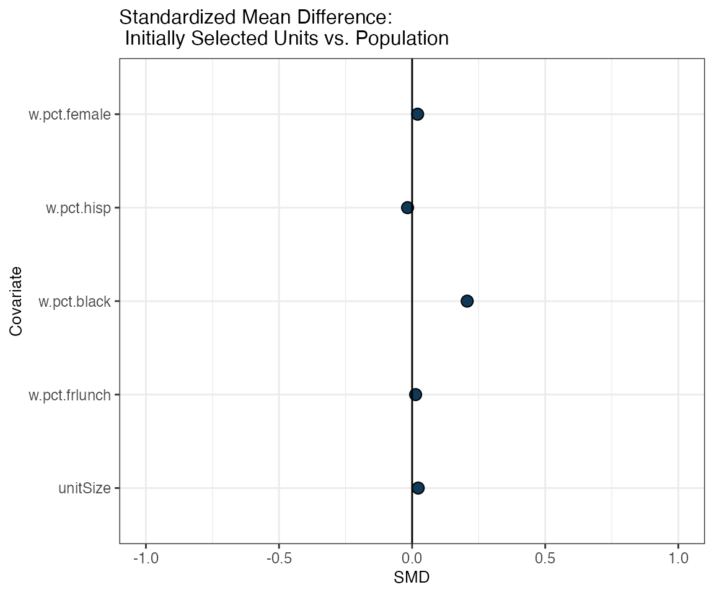
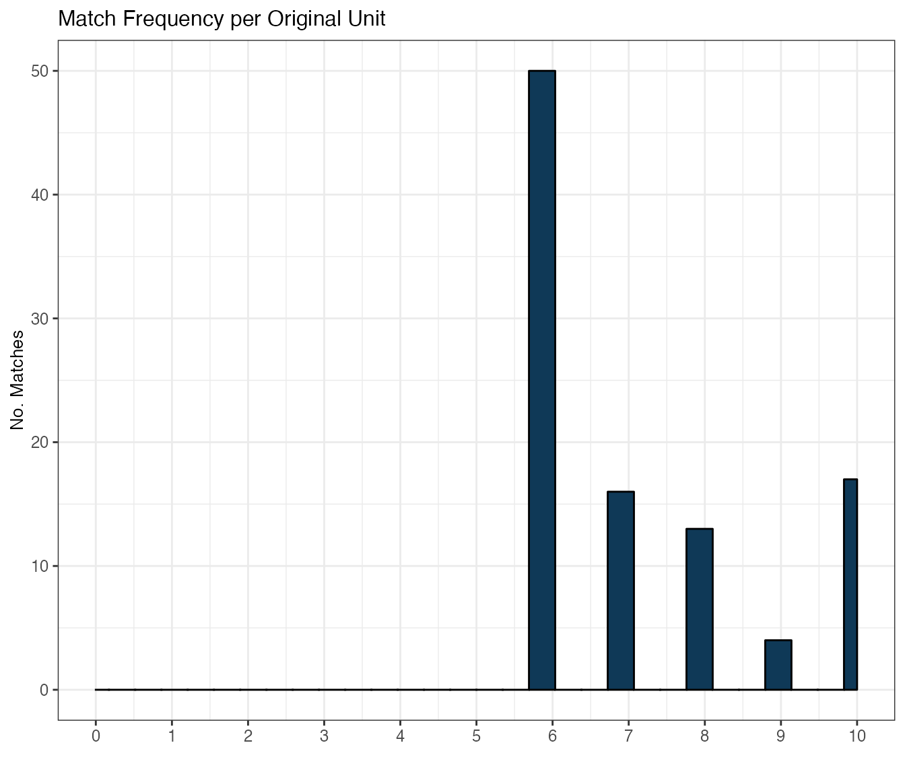

sitePickR: Getting Started
sitepickR-demo.RmdGetting Started: Sampling AY 2017-18 California schools and districts
Elena Badillo-Goicoechea, Robert Olsen, and Elizabeth A. Stuart
2022-09-16
Introduction
sitepickR is designed to select a representative sample of sites for a prospective impact evaluation, such as a randomized controlled trial (RCT).
Like generalizeR, this package is designed for selecting schools but can be used to select any type of site defined by geography or administrative responsibility (e.g., county, job training center, health clinic). Unlike generalizeR, sitepicker is designed to select sites in two stages —first “units” that contain multiple sites located nearby and/or under the same administration and then “subunits” containing individual sites. Two-stage sampling may be necessary when the cost of the study depends on the number of units (e.g., school districts), and a one-stage sample of sub-units (e.g., schools) would likely contain more units than the study can afford.
The main function in this package, selectMatch() lets the user carry out a two-level sample selection where the possibility of an initially selected unit not wanting to participate is anticipated. The procedure aims to reduce the bias (and/or loss of generalizability to the target population) this could introduce.
In selecting units and sub-units, sitepickR uses the cube method (e.g., Deville & Tillé, 2004; Tillé 2011). The cube method is a probability sampling method that is designed to satisfy criteria for balance between the sample and the population. Recent research has shown that this method performs well in simulations for studies of educational programs (Fay & Olsen, under review). To implement the cube method, sitepickerR uses the sampling R package. Users have the option to select units with equal probabilities or with probabilities proportional to their “size” measured in terms of the number of sub-units nested within units.
In addition, sitepickR uses statistical matching to select possible replacement units. In education RCTs, the share of selected districts that agrees to participate tends to be low. To address this challenge, sitepickR selects and ranks up to K replacement districts for each districts selected using the cube method. Replacement districts are selected using statistical matching based on propensity score methods. To implement statistical matching, sitepickR uses the MatchIt R package.
sitepickR’s core sampling + matching procedure, implemented with the selectMatch() function, consists of four main steps:
-
Study sample design, where we:
- Identify a target population with a unit : sub-unit nested structure (e.g. [district A : schools in district A])
- Set key parameter values (e.g. initial sample size, desired number of matches per unit)
- Specify a set of observable covariates of interest at the unit level
- Specify a set of sub-unit level observable covariates of interest
Select a random sample of units from the target population.
Obtain a list of best K matches for each initially selected unit, where match no. 1 is closest to a given original unit and match no. K is furthest, in terms of the covariates of interest and key parameter values.
These K matches will be the potential replacement units for each initially selected unit, in case their corresponding original unit is unable to participate in the study, and they are taken (with or without repetition, which you can set with the repFlag argument) from the pool of units that did not get selected in the initial random sampling procedure.
- Assess balance and match quality in terms of the
covariates of interest:
- Balance between initially selected (‘original’) units and the target population.
- Balance between original units and each group of matches (1 to K, from closest to furthest).
- Balance between sub-units associated to each unit replacement group and the original sub-units in the population, in terms of available covariates of interest, both at the unit and sub-unit level.
This vignette will guide the reader, step-by-step, on sitepickR’s basic functionalities, with data from the Common Core of Data (CCD) for California schools (2017-18), using a pre-processed dataset that comes with the package installation. Further technical details on each of the package’s main functions and on the sample dataset is included in the documentation.
Package and data set up
First, if needed, install the sitepickR package with the help of devtools:
if(!require(devtools)){
install.packages("devtools")
}
if(!require(sitepickR)){
devtools::install_github("ElenaBadilloG/sitepickR")
}Now load the package by calling its library:
library(sitepickR)Now let’s load the sample CCD-California 2017-18 dataset that comes installed with the package:
| LEAID | NCESSCH | w.pct.frlunch | w.pct.black | w.pct.hisp | w.pct.female | sch.pct.frlunch | sch.pct.black | sch.pct.hisp | sch.pct.female | dtrct_size | distr.type |
|---|---|---|---|---|---|---|---|---|---|---|---|
| 600001 | 60000109444 | 54.67626 | 0.7194245 | 43.165468 | 48.92086 | 54.67626 | 0.7194245 | 43.165468 | 48.92086 | 278 | B |
| 600006 | 60000608774 | 11.13861 | 0.8663366 | 9.282178 | 48.39109 | 11.13861 | 0.8663366 | 9.282178 | 48.39109 | 808 | A |
| 600009 | 60000908780 | 78.28947 | 0.0000000 | 78.289474 | 46.71053 | 78.28947 | 0.0000000 | 78.289474 | 46.71053 | 152 | D |
| 600013 | 60001308257 | 18.13563 | 1.7587074 | 13.126081 | 46.91478 | 11.32597 | 1.6574586 | 10.497238 | 45.58011 | 1086 | A |
| 600013 | 60001308553 | 18.13563 | 1.7587074 | 13.126081 | 46.91478 | 24.94530 | 1.8599562 | 15.754923 | 48.24945 | 914 | A |
| 600014 | 60001409077 | 81.88847 | 5.5068437 | 67.853079 | 47.56987 | 90.60465 | 7.0697674 | 76.837209 | 47.62791 | 1075 | D |
Process the sample aggregate dataset in order for it to be in the exact format expected by selectMatch by using sitepckr makeDF() function. This will re-define some key variables and create a new variable, ‘unitSize’, that will be used in the step of the selectMatch procedure where units are initially sampled. Specifically, cube sampling allows us to (optionally) select units in a way that is not biased by its number of sub-units:
dfCCD <- makeDF(rawCCD,
unitID="LEAID", subunitID="NCESSCH")
knitr::kable(dfCCD[1:10,(ncol(dfCCD)-5-1):ncol(dfCCD)], format = "html")| sch.pct.hisp | sch.pct.female | dtrct_size | distr.type | unitID | subunitID | unitSize |
|---|---|---|---|---|---|---|
| 43.165468 | 48.92086 | 278 | B | 600001 | 60000109444 | 1 |
| 9.282178 | 48.39109 | 808 | A | 600006 | 60000608774 | 1 |
| 78.289474 | 46.71053 | 152 | D | 600009 | 60000908780 | 1 |
| 10.497238 | 45.58011 | 1086 | A | 600013 | 60001308257 | 2 |
| 15.754923 | 48.24945 | 914 | A | 600013 | 60001308553 | 2 |
| 76.837209 | 47.62791 | 1075 | D | 600014 | 60001409077 | 3 |
| 61.365762 | 47.33396 | 1069 | D | 600014 | 60001409676 | 3 |
| 65.356265 | 47.74775 | 1221 | D | 600014 | 60001412103 | 3 |
| 50.000000 | 46.29630 | 108 | A | 600015 | 60001509084 | 1 |
| 58.833619 | 44.93997 | 583 | A | 600016 | 60001609090 | 3 |
Study sample design
Define key input values
Since there is some underlying random sampling in selectMatch, we can set a seed for replication purposes (optional):
seed = 1122 Set distance tolerance for restricted covariates:
calip = 0.2 # maximum standard deviations of covariate distance around target populationSpecify covariates of interest
Now, specify district level covariates on which you’ll want to match selected districts (units) with their replacement candidates on the non-selected sample:
uSampVarsCCD <- c("w.pct.frlunch", "w.pct.black", "w.pct.hisp", "w.pct.female") Similarly, specify school level covariates on which you’ll want to match districts. In our running CCD example, these covariates are just school (sub-unit) level aggregates of the same district level underlying variable. However, they could be any other sub-unit level variables available in your own dataset:
suSampVarsCCD <- c("sch.pct.frlunch", "sch.pct.black", "sch.pct.hisp", "sch.pct.female")You can (optionally) specify covariates on which to exactly match districts. These would usually be categorical covariates, with relatively few categories –otherwise the matching could fail, being too restrictive or even empty:
exactMatchVars <- c("distr.type")Similarly, you can optionally specify covariates on which to match districts within a given numeric caliper, in terms of standard deviations. Such covariates are expected to be numeric variables. In this case, we are interested in caliper-matching on thre covariates: percentage of Black, Hispanic, and female students in the district.
Notice that the lower the caliper, the more restrictive the matching (which could result in ferwe proportion of successful matches per replacement group, or even empty ones):
calipMatchVars <- c("w.pct.black", "w.pct.hisp", "w.pct.female")Get unit matches
We’ll now leverage sampling + MatchIt packages joint functionality, and match districts with their candidate replacements among the non-initially selected units using Mahalanobis distance. We can also do this using propensity scores, as specified on MatchIt’s documentation:
matchOut <- selectMatch(df=dfCCD, # user dataset
unitID="LEAID", # column name of unit ID in user dataset
subunitID="NCESSCH", # column name of sub-unit ID in user dataset
unitVars=uSampVarsCCD, # name of unit level covariate columns
subunitSampVars=suSampVarsCCD, # name of sub-unit level covariate columns
exactMatchVars= exactMatchVars, # unit level categorical covariates on which to match exactly
calipMatchVars=calipMatchVars, # unit level numeric covariates on which to match within a radius
nUnitSamp = Nu, # original unit sample size
nRepUnits = K, # number of desired matches per initially selected unit
nsubUnits = Ns, # number of sub-units to sample from each candidate unit
calipValue = calip, # maximum distance on which to match specified unit level covariates (calipMatchVars)
seedN = seed, # random seed number
matchDistance = "mahalanobis", # metric used for matching units
sizeFlag = TRUE,
repFlag = FALSE, # pick matches without repetition
writeOut = FALSE, # write out a csv file for: 1) matched units and 2) selected schools
replacementUnitsFilename = "replacementsTable.csv", # filename for {districtA: [districtA replacement list]} table
subUnitTableFilename = "schoolsDirectory.csv" # filename for {districtA: [districtA schools]} table
)At this point, the two main outputs of the selectMatch procedure have been produced, and are stored inside the ‘matchOut’ variable we’ve just defined. In our example, these are:
A table with 10 matches (replacement candidates) for each of the 100 schools district we initially selected. The matches are ordered from the most to the least ‘similar’ to their original district (where ‘similar’ is close, in terms of covariate distance).
A table with 5 (or less, when there are less than 5 schools available for a given district) randomly (if applicable) selected schools for each of the 100 original and each of the 100 x 10 candidate districts. Of course, each of these 5 schools are sampled exclusively from those that belong to each school district:
| unitID | Unit_replacement_1 | Unit_replacement_2 | Unit_replacement_3 | Unit_replacement_4 | Unit_replacement_5 | Unit_replacement_6 | Unit_replacement_7 | Unit_replacement_8 | Unit_replacement_9 | Unit_replacement_10 | |
|---|---|---|---|---|---|---|---|---|---|---|---|
| 4 | 600013 | 629610 | 624870 | 631470 | 607140 | 618030 | 621000 | 629370 | 629610 | 643140 | 628860 |
| 5 | 600014 | 625530 | 624600 | 603420 | 633900 | 626400 | 628530 | 639180 | NA | NA | NA |
| 7 | 600016 | 607970 | 607970 | 625320 | 627060 | 621360 | 609330 | 606990 | 624690 | NA | NA |
| 17 | 600028 | 630990 | 630990 | 633860 | 635700 | 626280 | 620370 | 634290 | 627750 | NA | NA |
| 45 | 600069 | 609570 | 600063 | 609570 | 606570 | 637140 | 611280 | 622440 | 631050 | 619950 | NA |
| 47 | 600153 | 643470 | 633750 | 610770 | 622050 | 615600 | 607170 | 605700 | NA | NA | NA |
schoolDirectory = matchOut[[2]]
knitr::kable(head(dplyr::filter(schoolDirectory, !is.na(Sub_unit5_ID))), format = "html")| unitID | Sub_unit1_ID | Sub_unit2_ID | Sub_unit3_ID | Sub_unit4_ID | Sub_unit5_ID |
|---|---|---|---|---|---|
| 600017 | 60001709100 | 60001709272 | 60001711122 | 60001711747 | 60001712663 |
| 600027 | 60002705011 | 60002709493 | 60002709496 | 60002710281 | 60002710588 |
| 600028 | 60002808272 | 60002809501 | 60002809505 | 60002811040 | 60002811187 |
| 600047 | 60004707384 | 60004707390 | 60004707398 | 60004707399 | 60004711784 |
| 600153 | 60015310936 | 60015310939 | 60015310941 | 60015310942 | 60015310946 |
| 601332 | 60133201993 | 60133205100 | 60133205103 | 60133205104 | 60133205105 |
Each of these two tables can be automatically stored as .csv files in your local computer, by simply settin writeOut = TRUE in the main function call to selectMatch. In case you use this feature, you can given those two files a specific name, using the [replacementUnitsFilename][repFlag](https://sitepickr.github.io/sitepickR-website/reference/selectMatch.html) and [subUnitTableFilename][repFlag](https://sitepickr.github.io/sitepickR-website/reference/selectMatch.html) selectMatch arguments (or just keeping their default values).
Assess balance and match quality
Now that we have our potential districts replacements, we’d like to know how ‘similar’ they really are to both the target population and the originally selected sample. Similarly, we’d like to know how well the schools that belong to each of these districts represent the schools of our target population, in terms of our covariates of interest. In the end, what we want is to be able to retain the original representativensess (imposed by our initial random sampling step) in our study design as much as possible, even when units “self-select”.
sitepickR provides the user with several functions to carry out these balance diagnostics. By default –and following the standard literature– balance diagnostics in sitepickR are expressed in terms of standardized mean difference (SMD) between two comparison groups of interest. In our case, these two comparison groups we’ll be: 1) initially selected districts (or schools) against target population; 2) initially selected districts (or schools) against each of the 10 district replacement groups.
In addition, sitepickR has functions to find out how ‘successful’ the matching procedure was, in terms of how often was it possible to find exactly K, K-1, …, 1, and 0 matches for the original units –possibly indicating we are asking for ‘too much’ in terms of maximum distance, or exact matching constraints, and thus, letting us re-adjust our parameters accordingly.
1. Original units vs. target population
First, we want to look at the overall balance between the initially selected districts (i.e. the group of districts that were selected in the initial cube sampling step of the selectMatch procedure) and all the districts in the population:
unitLovePlot(matchOut,
title="Standardized Mean Difference: \n Initially Selected Units vs. Population")
We can also take a look at a table with the actual SMD for each covariate of interest applying the getSummary() function:
unitBalanceTab = getSummary(matchOut, diagnostic="unitBal")
knitr::kable(head(unitBalanceTab, 10), format = "html")| Covariate | SMD |
|---|---|
| unitSize | 0.0006002 |
| w.pct.frlunch | -0.0090978 |
| w.pct.black | 0.1846243 |
| w.pct.hisp | -0.0393682 |
| w.pct.female | -0.0015680 |
2. Original units vs. replacement candidates
To assess the quality of our resulting district matches, we look at the balance (in terms of SMD) between the group of initially selected districts and each of its K replacement districts groups, where group 1 is composed of the first closest matches ordered in terms of distance, group 2 corresponds to the second-best matches, and so on:
matchBalance(matchOut,
title = "Standardized Mean Difference: Replacement Unit Groups (1...K) vs. Originally Selected Units")
matchBalanceTab = getSummary(matchOut, diagnostic="matchBal")
knitr::kable(head(matchBalanceTab, 20), format = "html")| unitGroup | variable | value |
|---|---|---|
| 1 | unitSize | -0.1501195 |
| 2 | unitSize | -0.2943405 |
| 3 | unitSize | -0.4113216 |
| 4 | unitSize | -0.4520049 |
| 5 | unitSize | -0.4901019 |
| 6 | unitSize | -0.4945458 |
| 7 | unitSize | -0.4960980 |
| 8 | unitSize | -0.4866504 |
| 9 | unitSize | -0.4935704 |
| 10 | unitSize | -0.5014734 |
| 1 | w.pct.frlunch | 0.0879801 |
| 2 | w.pct.frlunch | -0.0863748 |
| 3 | w.pct.frlunch | -0.0650728 |
| 4 | w.pct.frlunch | -0.0484472 |
| 5 | w.pct.frlunch | -0.0262339 |
| 6 | w.pct.frlunch | -0.1963502 |
| 7 | w.pct.frlunch | -0.1319418 |
| 8 | w.pct.frlunch | -0.6980171 |
| 9 | w.pct.frlunch | -0.7402887 |
| 10 | w.pct.frlunch | -0.6972090 |
3. Successful matches
Besides inspecting balance metrics, we might want to look at how many matches were actually computed for our original units. sitepickR lets us do this in both ways:
matchFreq(): distribution of successful matches across all original units. So this is the frequency (from 1 to K) of computed matches for the initially selected sub-population. This gives us an idea of how successful our matching procedure was, overall.
matchCount(): The number of successful matches between the original districts and replacement candidate districts from the non-selected pool, for each of their K replacements groups (which are by default sorted from most to least similar 1…K). So for the group of best matches (i.e. Replacement group 1), how many matches were computed by selectMatch, how many for the group of second-best matches, and so on. This gives us an idea of how restrictive our parameter settings were, taken together, and given our dataset structure. More specifically, the number of matches for each replacement group is expected to be: 1) decreasing in K, the number of matches (i.e. replacement candidates) we are asking for, and inversely related to restrictions imposed by exact matching, caliper value, and inherent structure and size of the data.
3.1 Match histogram
First, let’s look at the overall match frequency the original units got, overall:
matchFreq(matchOut,
title="Match Frequency per Original Unit")
3.2 Successfully computed unit matches per unit group (1…K)
Now let’s examine the percent of matches for each replacement group, sorted from closest to furthest units. Here, 100% for replacement group 1 means that all units got a best-match matches were successful, 50% for replacement group 2 means that only half of all original units got a 2nd best match, and so on:
matchCount(matchOut,
title="% of Successful Matches per Unit Group")Again, we can, use getSummary() to access each of these stats directly in a table:
matchFreqTab = getSummary(matchOut, diagnostic="matchFreq")
knitr::kable(matchFreqTab, format = "html")| origUnitID | matchN | |
|---|---|---|
| 4 | 600013 | 10 |
| 5 | 600014 | 7 |
| 7 | 600016 | 8 |
| 17 | 600028 | 8 |
| 45 | 600069 | 9 |
| 47 | 600153 | 7 |
| 50 | 600160 | 10 |
| 52 | 601332 | 7 |
| 57 | 601415 | 6 |
| 76 | 602360 | 8 |
| 79 | 602630 | 6 |
| 93 | 603630 | 6 |
| 99 | 604020 | 6 |
| 112 | 604800 | 8 |
| 119 | 605280 | 8 |
| 120 | 605400 | 10 |
| 128 | 606060 | 10 |
| 138 | 606510 | 10 |
| 146 | 606810 | 6 |
| 155 | 607440 | 6 |
| 159 | 607680 | 6 |
| 167 | 608130 | 7 |
| 179 | 609030 | 8 |
| 181 | 609120 | 10 |
| 184 | 609390 | 7 |
| 189 | 609620 | 6 |
| 208 | 611110 | 7 |
| 213 | 611460 | 7 |
| 227 | 612180 | 6 |
| 229 | 612330 | 6 |
| 244 | 613470 | 10 |
| 249 | 613890 | 7 |
| 254 | 614250 | 10 |
| 256 | 614370 | 8 |
| 258 | 614550 | 6 |
| 262 | 614880 | 6 |
| 267 | 615150 | 8 |
| 268 | 615180 | 6 |
| 283 | 616325 | 6 |
| 288 | 616740 | 6 |
| 290 | 616860 | 6 |
| 312 | 619050 | 6 |
| 327 | 620010 | 10 |
| 329 | 620130 | 10 |
| 332 | 620250 | 6 |
| 347 | 621090 | 10 |
| 359 | 621870 | 6 |
| 365 | 622230 | 6 |
| 370 | 622500 | 6 |
| 371 | 622560 | 7 |
| 372 | 622590 | 8 |
| 373 | 622650 | 10 |
| 374 | 622710 | 6 |
| 375 | 622740 | 10 |
| 380 | 622950 | 8 |
| 389 | 623610 | 6 |
| 390 | 623700 | 10 |
| 424 | 625470 | 6 |
| 428 | 625770 | 7 |
| 435 | 626190 | 10 |
| 439 | 626370 | 6 |
| 443 | 626640 | 6 |
| 452 | 627450 | 8 |
| 464 | 628050 | 6 |
| 465 | 628080 | 6 |
| 468 | 628250 | 7 |
| 470 | 628470 | 6 |
| 474 | 628710 | 7 |
| 486 | 629580 | 6 |
| 491 | 629820 | 10 |
| 494 | 629940 | 6 |
| 516 | 631320 | 6 |
| 518 | 631400 | 7 |
| 528 | 632070 | 6 |
| 545 | 633150 | 6 |
| 564 | 634320 | 6 |
| 566 | 634410 | 6 |
| 568 | 634440 | 6 |
| 570 | 634620 | 6 |
| 577 | 634920 | 7 |
| 585 | 635310 | 6 |
| 594 | 636000 | 6 |
| 607 | 636840 | 9 |
| 629 | 638010 | 6 |
| 633 | 638430 | 9 |
| 636 | 638640 | 6 |
| 647 | 639420 | 6 |
| 660 | 640590 | 7 |
| 668 | 641160 | 7 |
| 669 | 641190 | 6 |
| 671 | 641280 | 6 |
| 674 | 641580 | 6 |
| 676 | 641820 | 10 |
| 680 | 642060 | 9 |
| 682 | 642140 | 8 |
| 686 | 642300 | 6 |
| 688 | 642450 | 8 |
| 694 | 642810 | 6 |
| 704 | 684500 | 6 |
| 705 | 691134 | 6 |
matchCountTab = getSummary(matchOut, diagnostic="matchCount")
knitr::kable(matchCountTab, format = "html")| Perc_Matches | UnitGroup | |
|---|---|---|
| Unit_replacement_1 | 100 | 1 |
| Unit_replacement_2 | 100 | 2 |
| Unit_replacement_3 | 100 | 3 |
| Unit_replacement_4 | 100 | 4 |
| Unit_replacement_5 | 100 | 5 |
| Unit_replacement_6 | 100 | 6 |
| Unit_replacement_7 | 50 | 7 |
| Unit_replacement_8 | 34 | 8 |
| Unit_replacement_9 | 21 | 9 |
| Unit_replacement_10 | 17 | 10 |
4. Sub-units from original vs. candidate units
Ultimately, the procedure wants to yield not just districts, but schools that are similar to the target population, in terms of all specified covariates of interest (both the district and school level ones). sitepickR’s subUnitBalance() function lets us assess the matching quality precisely on this terms:
subUnitBalance(matchOut,
title="Standardized Mean Difference: \n Sub-units from Original + Replacement Unit Groups vs. Population")Similary, use getSummary() function to obtain balance directly in a table:
subUnitBalanceTab = getSummary(matchOut, diagnostic="subunitBal")
knitr::kable(subUnitBalanceTab, format = "html")| unitGroup | variable | value |
|---|---|---|
| 0 | unitSize | -0.1172364 |
| 1 | unitSize | -0.2625788 |
| 2 | unitSize | -0.3494034 |
| 3 | unitSize | -0.4045266 |
| 4 | unitSize | -0.4339781 |
| 5 | unitSize | -0.4622501 |
| 6 | unitSize | -0.4642802 |
| 7 | unitSize | -0.4584539 |
| 8 | unitSize | -0.4614375 |
| 9 | unitSize | -0.4655204 |
| 10 | unitSize | -0.4711910 |
| 0 | w.pct.frlunch | 0.0324414 |
| 1 | w.pct.frlunch | 0.0397079 |
| 2 | w.pct.frlunch | -0.2024191 |
| 3 | w.pct.frlunch | -0.1820785 |
| 4 | w.pct.frlunch | -0.2449326 |
| 5 | w.pct.frlunch | -0.1198341 |
| 6 | w.pct.frlunch | -0.1611677 |
| 7 | w.pct.frlunch | -0.1279969 |
| 8 | w.pct.frlunch | -0.7053528 |
| 9 | w.pct.frlunch | -0.5327795 |
| 10 | w.pct.frlunch | -0.4170791 |
| 0 | w.pct.black | 0.0125291 |
| 1 | w.pct.black | 0.1473213 |
| 2 | w.pct.black | -0.1144067 |
| 3 | w.pct.black | -0.0267611 |
| 4 | w.pct.black | -0.1677871 |
| 5 | w.pct.black | -0.6155103 |
| 6 | w.pct.black | -0.7090205 |
| 7 | w.pct.black | -0.6947914 |
| 8 | w.pct.black | -0.7421741 |
| 9 | w.pct.black | -0.7020242 |
| 10 | w.pct.black | -0.7006807 |
| 0 | w.pct.hisp | 0.0797792 |
| 1 | w.pct.hisp | 0.1419596 |
| 2 | w.pct.hisp | -0.0254515 |
| 3 | w.pct.hisp | -0.1515927 |
| 4 | w.pct.hisp | -0.1731308 |
| 5 | w.pct.hisp | -0.0432153 |
| 6 | w.pct.hisp | -0.3039892 |
| 7 | w.pct.hisp | -0.3885416 |
| 8 | w.pct.hisp | -0.6140017 |
| 9 | w.pct.hisp | -0.7953240 |
| 10 | w.pct.hisp | -0.8396110 |
| 0 | w.pct.female | 0.0505712 |
| 1 | w.pct.female | 0.0133276 |
| 2 | w.pct.female | 0.0520637 |
| 3 | w.pct.female | 0.1926969 |
| 4 | w.pct.female | 0.1278740 |
| 5 | w.pct.female | -0.0038164 |
| 6 | w.pct.female | -0.2017726 |
| 7 | w.pct.female | -1.0833563 |
| 8 | w.pct.female | 0.4219309 |
| 9 | w.pct.female | 0.3519038 |
| 10 | w.pct.female | 0.0595760 |
| 0 | sch.pct.frlunch | 0.0205379 |
| 1 | sch.pct.frlunch | 0.0334419 |
| 2 | sch.pct.frlunch | -0.1761499 |
| 3 | sch.pct.frlunch | -0.1594918 |
| 4 | sch.pct.frlunch | -0.2145488 |
| 5 | sch.pct.frlunch | -0.1049687 |
| 6 | sch.pct.frlunch | -0.1411749 |
| 7 | sch.pct.frlunch | -0.1121189 |
| 8 | sch.pct.frlunch | -0.6178541 |
| 9 | sch.pct.frlunch | -0.4666884 |
| 10 | sch.pct.frlunch | -0.3653406 |
| 0 | sch.pct.black | -0.0133518 |
| 1 | sch.pct.black | 0.1089601 |
| 2 | sch.pct.black | -0.0798537 |
| 3 | sch.pct.black | -0.0204378 |
| 4 | sch.pct.black | -0.1281415 |
| 5 | sch.pct.black | -0.4700742 |
| 6 | sch.pct.black | -0.5414893 |
| 7 | sch.pct.black | -0.5306223 |
| 8 | sch.pct.black | -0.5668092 |
| 9 | sch.pct.black | -0.5361462 |
| 10 | sch.pct.black | -0.5351201 |
| 0 | sch.pct.hisp | 0.0759932 |
| 1 | sch.pct.hisp | 0.1339400 |
| 2 | sch.pct.hisp | -0.0260683 |
| 3 | sch.pct.hisp | -0.1356822 |
| 4 | sch.pct.hisp | -0.1549598 |
| 5 | sch.pct.hisp | -0.0386797 |
| 6 | sch.pct.hisp | -0.2720838 |
| 7 | sch.pct.hisp | -0.3477619 |
| 8 | sch.pct.hisp | -0.5495588 |
| 9 | sch.pct.hisp | -0.7118503 |
| 10 | sch.pct.hisp | -0.7514891 |
| 0 | sch.pct.female | 0.0154785 |
| 1 | sch.pct.female | 0.0008496 |
| 2 | sch.pct.female | 0.0327176 |
| 3 | sch.pct.female | 0.1304003 |
| 4 | sch.pct.female | 0.0865339 |
| 5 | sch.pct.female | -0.0025826 |
| 6 | sch.pct.female | -0.1365419 |
| 7 | sch.pct.female | -0.7331199 |
| 8 | sch.pct.female | 0.2855256 |
| 9 | sch.pct.female | 0.2381374 |
| 10 | sch.pct.female | 0.0403158 |
| 0 | All Covariates (average of the absolute SMDs) | 0.0464354 |
| 1 | All Covariates (average of the absolute SMDs) | 0.0980096 |
| 2 | All Covariates (average of the absolute SMDs) | 0.1176149 |
| 3 | All Covariates (average of the absolute SMDs) | 0.1559631 |
| 4 | All Covariates (average of the absolute SMDs) | 0.1924318 |
| 5 | All Covariates (average of the absolute SMDs) | 0.2067702 |
| 6 | All Covariates (average of the absolute SMDs) | 0.3257245 |
| 7 | All Covariates (average of the absolute SMDs) | 0.4974181 |
| 8 | All Covariates (average of the absolute SMDs) | 0.5516272 |
| 9 | All Covariates (average of the absolute SMDs) | 0.5333749 |
| 10 | All Covariates (average of the absolute SMDs) | 0.4644893 |